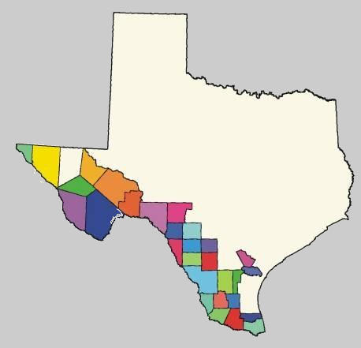

TEXAS BORDER PARTNERSHIP

Other Related Links - Articles
U.S. May Use New ID Cards At Borders
High Court Opens U.S. Roads to Mexican Trucks
DPS Roadcheck 2004 (72 hr Inspections of Commercial Vehicles and Safety)
Port Security Council Formed to Address Security Funding Issues
Letter from eight governors in support of border improvement program provisions in the TEA-21 reauthorization bill
U.S. Department of Transportation (FHWA) Freight Planning
Binational Border Transportation Planning & Program Process
GAO - Freight Transportation - December 2003
State of Texas First Response Program - August 2002
Other U.S. - Mexico Border Environmental References
TRB's Committee for the Study of Freight Capacity for the 21st Century - Special Report 271
U.S. Homeland Security Agency Announces Major Effort to Stop Smuggling Along Mexico Border
Computer-Assisted Passenger Prescreening System Faces Significant Implementation Challenges
Public Transportation System and Emergency Preparedness Planning Guide
Cleanup and Recovery of Passenger Transportation Facilities After a Bioattack
Freight Information Real-Time System for Transport (FIRST): Evaluation Final Report
Transportation Statistics Annual Report
Canada / U.S. Border Transportation Planning
This site is hosted and maintained by the
Texas Transportation Institute
.